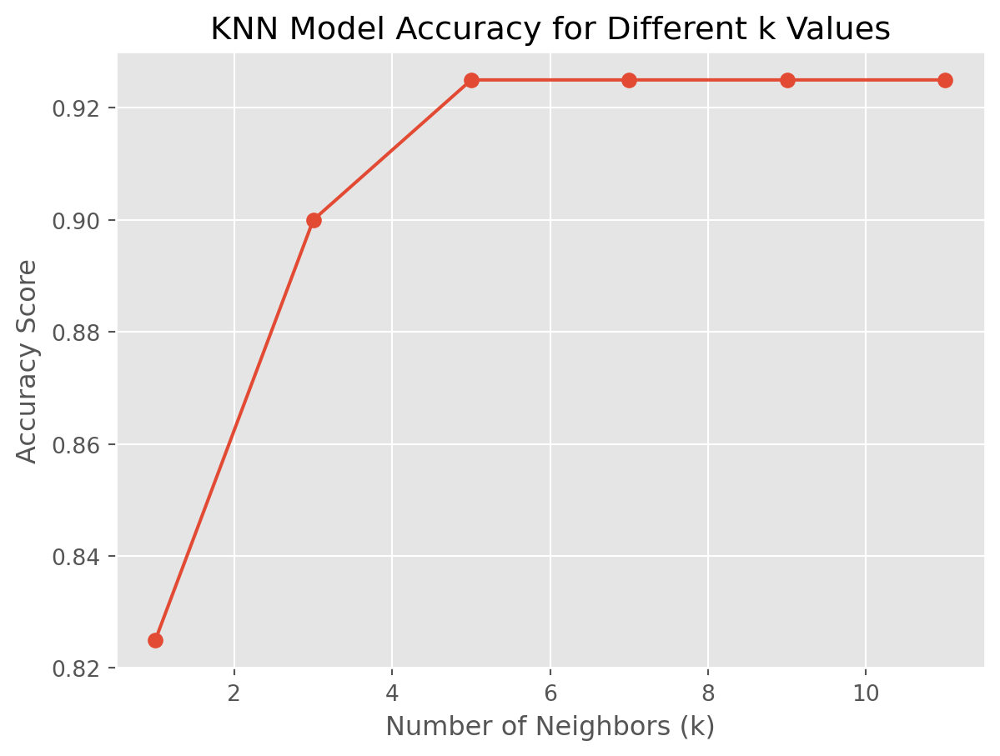
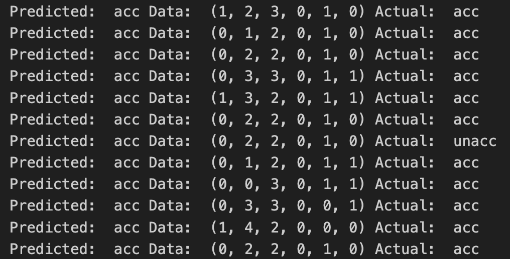
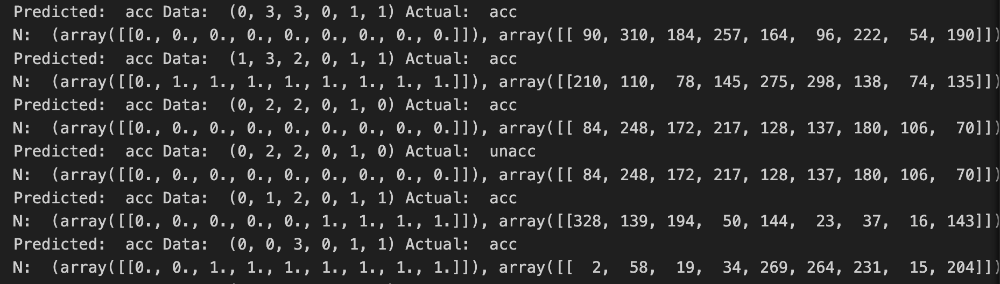

from sklearn import preprocessing, linear_model
import sklearn
from sklearn.utils import shuffle
from sklearn.neighbors import KNeighborsClassifier
import pandas as pd
import numpy as np
from sklearn.metrics import accuracy_score, precision_score, recall_score, f1_score
import matplotlib.pyplot as plt
from matplotlib import styleIn this plot, we will use the same datset and apply the K-Nearest Neighbors (KNN) algorithm to predict wether high school students want to take higher education based on various attributes. KNN stands for K-Nearest Neighbors where K is any kind of integer and used for classifying data.
Importing Modules/Packages
Before we get started, let’s bring in a few modules. These will help us normalize our data and convert non-numeric values into numeric ones
Loading Data
After placing our student data file into our current script directory, we can load our data. To do this, we’ll use the pandas module, as seen in a previous post
data =pd.read_csv("/Users/ella.yang/Desktop/ds499/hsin-yu-yang.github.io/data/student_mat.csv", sep=";")
#print(data.head())
data = data[["famsize", "Mjob", "Fjob", "schoolsup", "famsup", "activities", "higher"]]Converting Data
As you may have noticed, many of our selected columns are not numeric. To train the K-Nearest Neighbor Classifier, we need to convert any string data into numbers. Luckily, sklearn has a method that can handle this for us.
We will start by creating a label encoder object and then use that to convert non-numeric data into numbers.
le = preprocessing.LabelEncoder()The method \(fit_transform()\) takes a list (each of our columns) and will turning words into numbers
famsize = le.fit_transform(list(data["famsize"]))
Mjob = le.fit_transform(list(data["Mjob"]))
Fjob = le.fit_transform(list(data["Fjob"]))
schoolsup = le.fit_transform(list(data["schoolsup"]))
famsup = le.fit_transform(list(data["famsup"]))
activities = le.fit_transform(list(data["activities"]))
higher = le.fit_transform(list(data["higher"]))After converting, we use the \(zip()\) function to group our data into two lists: one for features and another for labels, making it easier to work with
X = list(zip(famsize, Mjob, Fjob, schoolsup, famsup, activities)) # features
y = list(higher) # labelsLastly, we divide our data into two parts – one for training our model and the other for testing its performance
x_train, x_test, y_train, y_test = sklearn.model_selection.train_test_split(X, y, test_size = 0.1)
#print(x_train,y_test)How Does it Work?
Imagine you have points in space, and you want to know to which group a new point belongs. K-Nearest Neighbors (KNN) helps by looking at the closest points (neighbors) and deciding based on what most of those neighbors are. The “k” represents how many neighbors to consider.
When “k” is small, KNN might focus too much on very close points, potentially making mistakes. If “k” is large, KNN may not pay enough attention to nearby points, leading to errors. Finding the right “k” is crucial.
Training a KNN Classifier
Creating a KNN Classifier is similar to linear regression, but now we set the number of neighbors (n_neighbors)
from sklearn.neighbors import KNeighborsClassifier
model = KNeighborsClassifier(n_neighbors=9)Training our model involves the same steps
model.fit(x_train, y_train)KNeighborsClassifier(n_neighbors=9)In a Jupyter environment, please rerun this cell to show the HTML representation or trust the notebook.
On GitHub, the HTML representation is unable to render, please try loading this page with nbviewer.org.
KNeighborsClassifier(n_neighbors=9)
To evaluate our model
# Making predictions on the test set
predicted = model.predict(x_test)
accuracy = accuracy_score(y_test, predicted)
precision = precision_score(y_test, predicted, average='weighted')
recall = recall_score(y_test, predicted, average='weighted')
f1 = f1_score(y_test, predicted, average='weighted')
print(f'Accuracy: {accuracy:.2f}')
print(f'Precision: {precision:.2f}')
print(f'Recall: {recall:.2f}')
print(f'F1 Score: {f1:.2f}')Accuracy: 0.93
Precision: 0.86
Recall: 0.93
F1 Score: 0.89/Library/Frameworks/Python.framework/Versions/3.11/lib/python3.11/site-packages/sklearn/metrics/_classification.py:1471: UndefinedMetricWarning:
Precision is ill-defined and being set to 0.0 in labels with no predicted samples. Use `zero_division` parameter to control this behavior.
Accuracy think of accuracy as the overall correctness of our model. It’s like checking how many questions you answered correctly in a test, and expressing it as a percentage.
Precision tells us how good the model is at not calling something positive when it’s actually negative. Imagine it as the accuracy of your positive guesses – how many of the things you said were positive are actually positive.
Recall is about the model’s ability to find all the positive instances. It’s like checking how many of the actual positive things you managed to catch among all the positive things that exist.
F1 Score is like finding a balance between making accurate positive guesses and catching all the positive instances. It considers both precision and recall, providing a single number to assess overall performance.
# Initialize a KNN model with different values of k
k_values = [1, 3, 5, 7, 9, 11]
accuracy_scores = []
for k in k_values:
model = KNeighborsClassifier(n_neighbors=k)
model.fit(x_train, y_train)
# Evaluate the model
predicted = model.predict(x_test)
accuracy = accuracy_score(y_test, predicted)
accuracy_scores.append(accuracy)
# Plotting the results
style.use('ggplot')
plt.plot(k_values, accuracy_scores, marker='o')
plt.title('KNN Model Accuracy for Different k Values')
plt.xlabel('Number of Neighbors (k)')
plt.ylabel('Accuracy Score')
plt.show()
Testing Our Model
To see how well our model predicts, we can check its predictions against the actual outcomest
names = ["unacc", "acc", "good", "vgood"]
for x in range(len(predicted)):
#print("Predicted: ", names[predicted[x]], "Data: ", x_test[x], "Actual: ", names[y_test[x]])
n= model.kneighbors([x_test[x]], 9, True) #distance between the 9 neighbors
#print("N: ", n)
# This will display the predicted value, our data and the actual value
# We create a names list so that we can convert our integer predictions into their string representation 
Looking at Neighbors
KNN has a method to show us the neighbors of a data point, helping us visualize our model’s accuracy. We can use model.neighbors to do this
